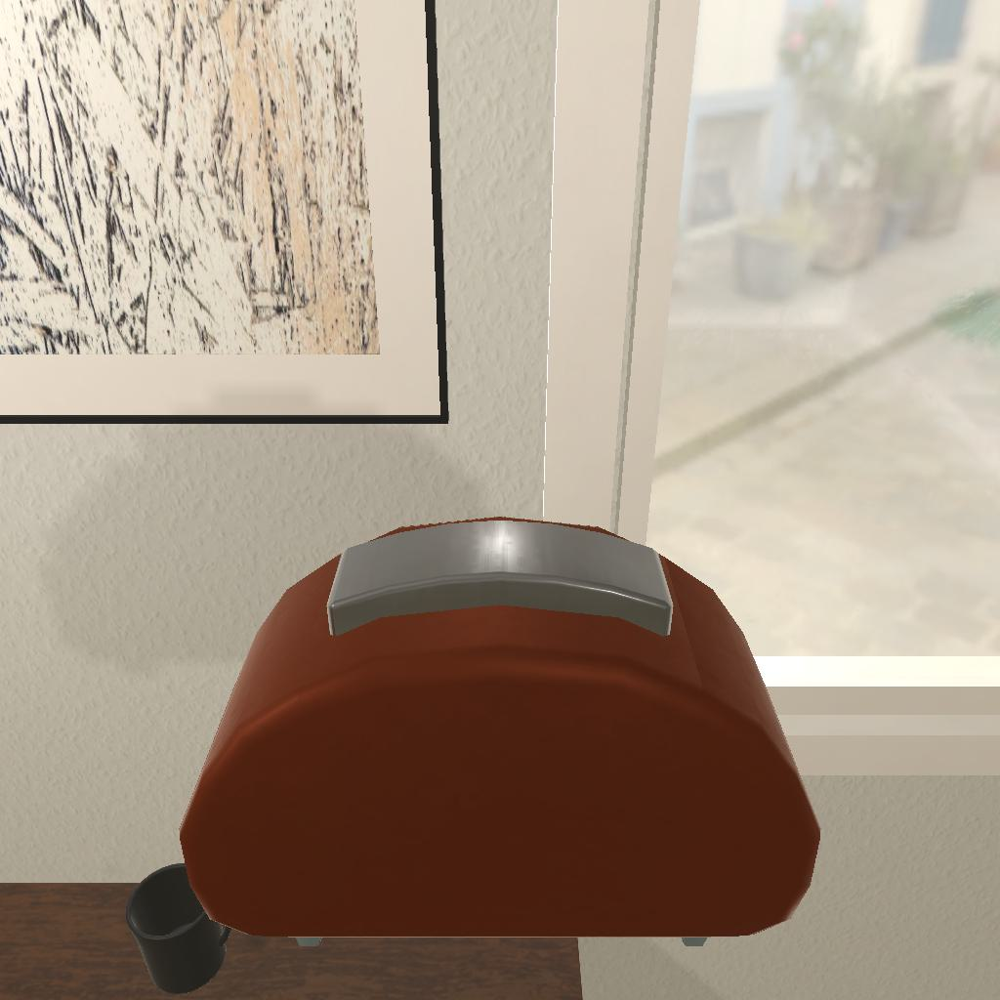

---------------------------------------------------------task: 1---------------------------------------------------------
--------------------------------------------------------------------------------------------------------------------------------------------------------------------
--------------------------------------------------------------------------------------------------------------------------------------------------------------------
Step:--------------------------------------------------------------------------3-------------------------------------------------------------------------------
----------------------------------------
VLM Prompt:
Image1:
Image2:
Image3:
**Instruction**
1. Analyze the provided images to identify all visible household objects and compare the difference between images (e.h. whether the object is opened or not and taken on hand or not), focusing on those relevant to the task description "examine the alarmclock with the desklamp."
2. Use the analysis of images and the task hint "The agent must find an object of the desired type, locate and turn on a light source with the desired object in-hand." to answer the question: what is the most reasonable action in the choices for the task description "examine the alarmclock with the desklamp"?
3. Decide and write the answer using the template: The answer is: (i): , where i is the real number. If there is no desired object in images, search every place based on **Initial Observation** to find the object. And if no one is exactly correct, choose a similar answer.
**Initial Observation**
You are in the middle of a room. Looking quickly around you, you can see bed (1), dresser (1), drawer (1-10), garbagecan (1), shelf (1-7)
**Answer Choices**
(1): go to bed 1
(2): go to drawer 1
(3): go to drawer 2
(4): go to drawer 3
(5): go to drawer 4
(6): go to drawer 5
(7): go to garbagecan 1
(8): go to drawer 6
(9): go to drawer 7
(10): go to drawer 8
(11): go to drawer 9
(12): go to drawer 10
(13): go to shelf 2
(14): go to shelf 3
(15): go to shelf 4
(16): go to shelf 5
(17): go to shelf 6
(18): go to shelf 7
(19): put alarmclock 1 in/on shelf 1
(20): examine alarmclock 1
(21): examine shelf 1
**Answer**
Let's think step by step by following the instructions.
----------------------------------------
----------------------------------------
Original Response:
Image Analysis:
- Image 1 shows a desk with a laptop, a credit card, a CD, and a set of keys.
- Image 2 shows the same desk with an alarm clock displaying the time 23:57, a coffee mug, and a window with daylight visible outside.
- Image 3 is a close-up of the alarm clock on the desk.
Comparison:
- The alarm clock is visible in Image 2 but not in Image 1, indicating it has been brought to the desk between the two images.
- The time on the alarm clock suggests it's late in the evening or night.
- The desklamp is not visible in any of the images.
Task Description Analysis:
- The task is to "examine the alarm clock with the desklamp."
- The alarm clock is already on the desk, so there is no need to search for it.
- The desklamp is not visible, so it needs to be found and turned on to examine the alarm clock properly.
Based on the Initial Observation, possible locations for the desklamp could be on the dresser, drawers, or shelves. Since the desklamp is not specified in the initial observation or answer choices, we must choose an action that could lead to finding the desklamp.
The most reasonable action from the choices provided would be to search the shelves, as a desklamp is most likely to be placed on a shelf rather than inside a drawer or garbage can.
The answer is: (13): go to shelf 2
----------------------------------------
----------------------------------------
>>> Refine Original VLM Response and Get Pure Action: go to shelf 2
----------------------------------------
-----------------------------------------------------------------
Running time: 19.05645751953125 seconds
Total Money: 0.5225299999999999
-----------------------------------------------------------------
-----------------------------------------------------------------
Text Observation:You arrive at loc 14. On the shelf 2, you see a cd 1, a mug 1, and a keychain 1.
-----------------------------------------------------------------
UNSUCCEED